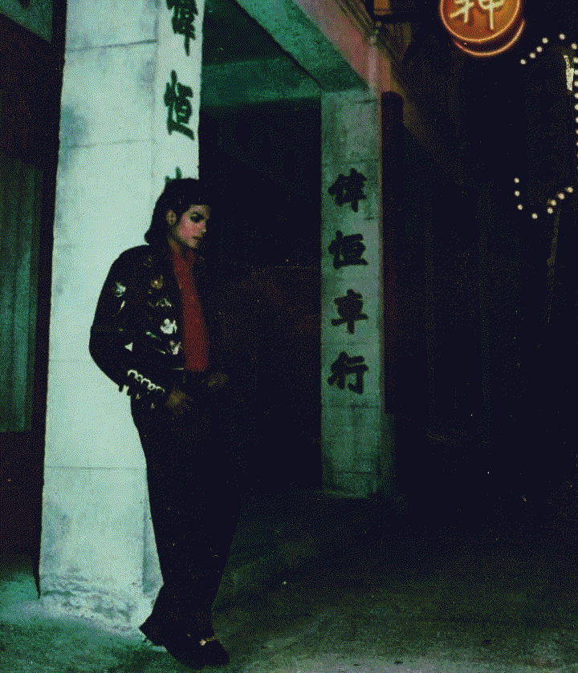
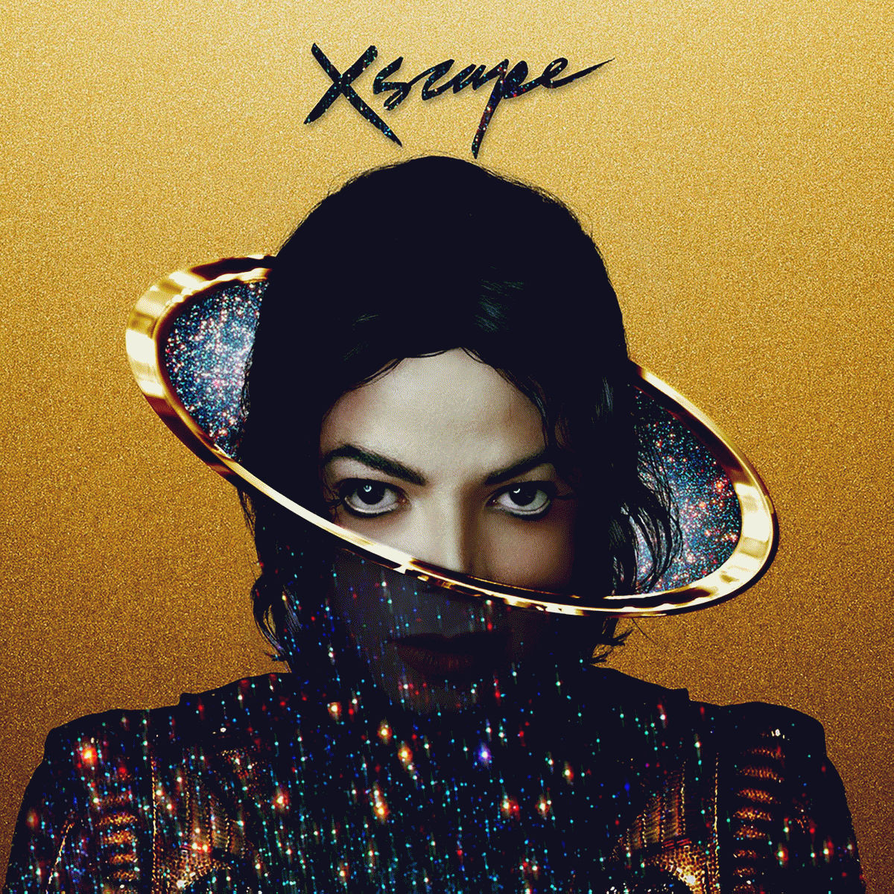
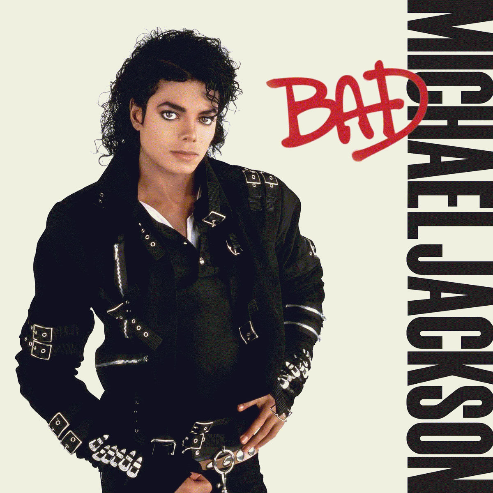
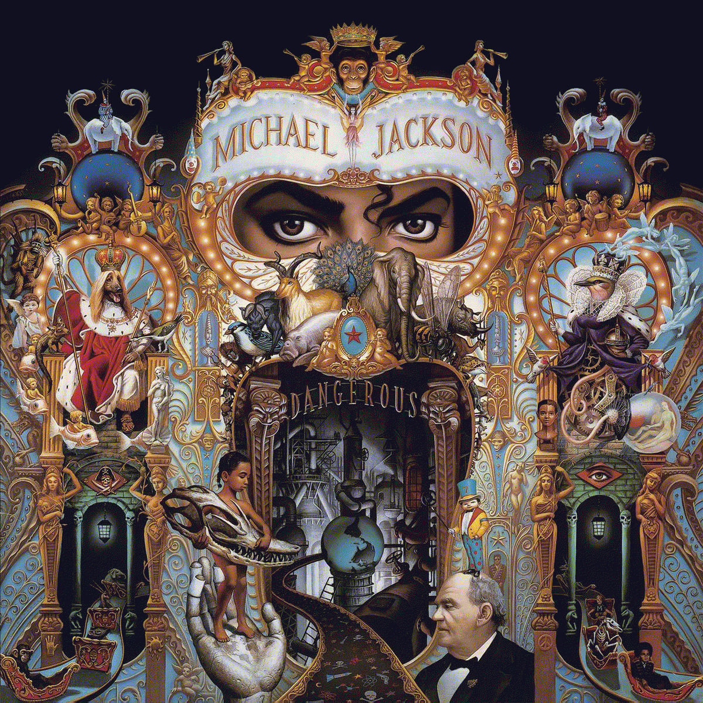

Nesse site vou falar sobre os meus cinco álbuns favoritos do Michael Jackson, em ordem decrescente, e minhas cinco músicas favoritas de cada um deles. Além disso, com base no Wikipedia, coloquei breves descrições dos discos a fim de trazer conhecimento para o leitor e também contar um pouco da história e impacto do maior artista de todos os tempos. E se você não sabe quem é Michael Jackson, o que é impossível, recomendo clicar no link abaixo.




Essa foi meu top 5 álbuns do Michael Jackson aka Rei do Pop. Espero que tenha gostado!